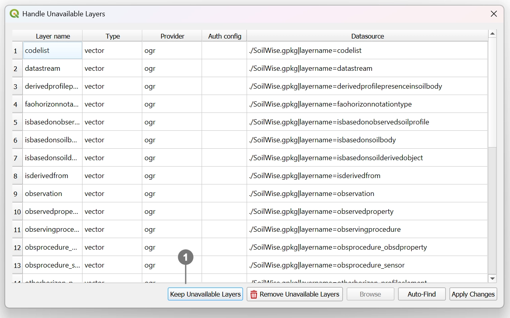
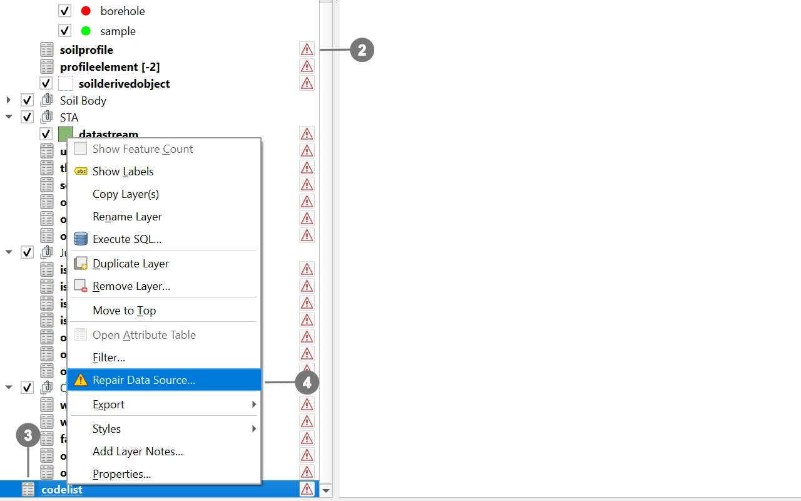
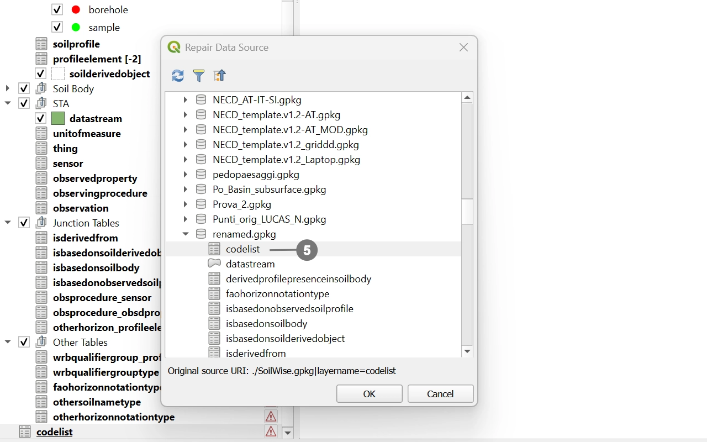

When a QGIS project is saved inside a GeoPackage, it stores hard‑coded paths and references to the file using its exact filename. These references are not dynamic—QGIS does not automatically update them if the file name changes.
As a result, renaming the GeoPackage alters a critical part of the stored path (the filename), preventing QGIS from locating the layers contained within it. This causes all internal links to break, leading to data source errors and, in many cases, preventing the project from loading correctly.
Warning
Even a simple change to the .gpkg filename is enough to break the entire referencing system the project relies on, because all paths continue to point to the original name.
When the GeoPackage is renamed, opening the PRJ_SO project will trigger a dialog informing you that the relative paths are corrupted.
Follow the steps below to restore all layer connections:

Note
The Auto‑Find button usually fails to resolve the issue. It is therefore recommended to follow the instructions below.

Right‑click any broken layer ③ and choose “Repair Data Source” ④.

After selecting the correct file, QGIS will automatically repair the selected layer and all other layers affected by the rename.
Save the project once the paths are restored.
Important
This means you can safely distribute the project, and users will be able to open it without repeating the procedure, because the updated paths are already embedded in the project itself.
If the GeoPackage has been renamed and the project can no longer locate its internal data sources, you can use the Change Gpkg Path plugin to automatically fix all broken references:
🔗 Plugin repository: https://github.com/cxcandid/changeGpkgPath
Once installed, the plugin will:
After the project is opened with the updated paths, simply save the project again.
At this point, all corrected references are stored directly inside the project file.
Important
This means you can safely distribute the project, and users will be able to open it without installing the plugin, because the updated paths are already embedded in the project itself.